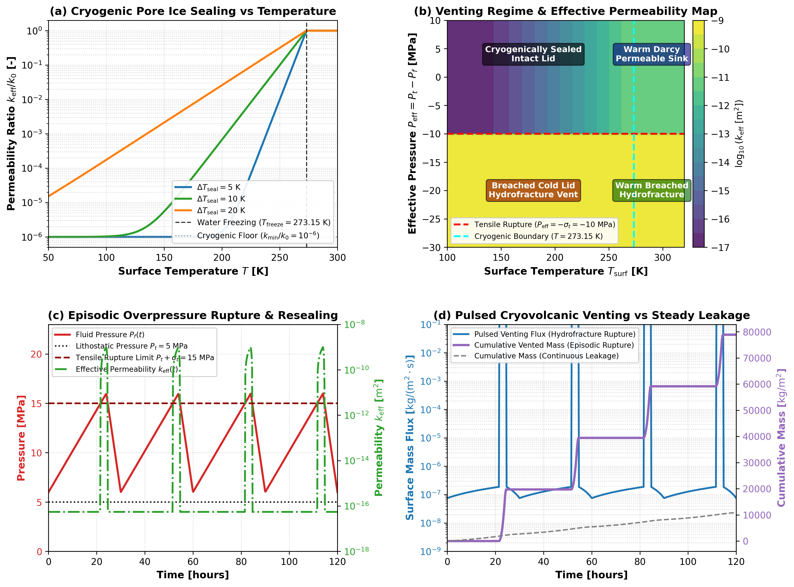

Cold Lid Hydrofracture Breaching and Cryogenic Pore Ice Sealing Validation
This module validates the cold lid hydrofracture breaching criterion, cryogenic pore ice permeability sealing, and episodic cryovolcanic venting dynamics in Erebus.jl.
1. Physical Motivation
Early planetesimals and icy planetesimals undergo internal heating from short-lived radionuclides ($^{26}\text{Al}$ and $^{60}\text{Fe}$), triggering prograde metamorphic dehydration and fluid pressurization. However, near the surface, radiative equilibrium or cold nebular conditions maintain crustal temperatures well below the water freezing point ($T_{\text{surf}} \ll 273.15\text{ K}$).
In this cryogenic regime, pore fluid freezes into water ice, filling porosity and reducing the effective permeability by orders of magnitude. This cryogenic seal traps pressurized fluid beneath an impermeable crust. Venting occurs only when fluid overpressures overcome the lithostatic confining pressure and rock tensile strength:
\[P_f \ge P_t + \sigma_t \iff P_{\text{eff}} \le -\sigma_t\]
Tensile failure ruptures the cold lid, producing hydrofractures that discharge fluid rapidly into space or the nebular gas. As pore fluid drains, fluid pressure drops below the tensile threshold, hydrofractures close, and pore ice reseals the lid.
2. Mathematical Formulation
Cryogenic Pore Ice Permeability Sealing
For sub-freezing rock temperatures ($T < T_{\text{freeze}}$), pore ice reduces permeability via an exponential temperature cutoff:
\[k_{\text{eff}}(T) = k_v \cdot \left[(1 - r_{\text{min}}) \exp\left(-\frac{T_{\text{freeze}} - T}{\Delta T_{\text{seal}}}\right) + r_{\text{min}}\right]\]
| Parameter | Description | Standard Value | Units |
|---|---|---|---|
| $k_v$ | Reference matrix permeability | $1.0\times 10^{-11}$ | $\text{m}^2$ |
| $T_{\text{freeze}}$ | Liquid-solid transition temperature | $273.15$ | $\text{K}$ |
| $\Delta T_{\text{seal}}$ | Temperature sealing transition scale | $10.0$ | $\text{K}$ |
| $r_{\text{min}}$ | Minimum residual cryogenic permeability ratio | $1.0\times 10^{-6}$ | - |
For $T \ge T_{\text{freeze}}$, $k_{\text{eff}} = k_v$ (unsealed matrix).
Cold Lid Hydrofracture Breaching
Hydrofracturing activates when Terzaghi effective pressure satisfies tensile failure:
\[P_{\text{eff}} = P_t - P_f \le -\sigma_t\]
When breached, macroscopic fractures cut across the cold lid, bypassing the pore ice seal with an enhanced permeability:
\[k_{\text{frac}}(P_{\text{eff}}) = \min\left(k_{\text{max}}, k_v \left[1 + \kappa_{\text{frac}} \left(\frac{-P_{\text{eff}} - \sigma_t}{\sigma_t}\right)^\gamma\right]\right)\]
| Parameter | Description | Standard Value | Units |
|---|---|---|---|
| $\sigma_t$ | Rock tensile strength | $1.0\times 10^7$ | $\text{Pa}$ |
| $\kappa_{\text{frac}}$ | Fracture enhancement multiplier | $1.0\times 10^3$ | - |
| $\gamma$ | Power-law scaling exponent | $1.0$ | - |
| $k_{\text{max}}$ | Maximum fractured permeability ceiling | $1.0\times 10^{-9}$ | $\text{m}^2$ |
3. Literature Anchors
- Fu, R. R., & Elkins-Tanton, L. T. (2014). The early thermal evolution of planetesimals: Implications for differentiated asteroids and carbonaceous chondrite parent bodies. Earth and Planetary Science Letters, 390, 128-137. https://doi.org/10.1016/j.epsl.2014.01.009
- Neveu, M., Desch, S. J., & Castillo-Rogez, J. C. (2015). Core cracking and hydrothermal circulation can profoundly affect Ceres' geophysical evolution. Journal of Geophysical Research: Planets, 120(2), 123-154. https://doi.org/10.1002/2014JE004714
- Manga, M., & Wang, C.-Y. (2007). Pressurized oceans and eruptive mechanism for Enceladus. Geophysical Research Letters, 34(7), L07202. https://doi.org/10.1029/2007GL029297
4. Benchmark Diagnostics
Figure 1 presents an illustrative verification benchmark for the operational regimes and equations of cold lid hydrofracture venting:

Figure 1: Four-panel verification benchmark schematic for cold lid hydrofracture breaching and cryogenic pore ice sealing equations. (a) Permeability ratio $k_{\text{eff}} / k_0$ as a function of surface temperature for transition scales $\Delta T_{\text{seal}} \in \{5, 10, 20\}\text{ K}$, with smooth exponential suppression down to the cryogenic floor ($10^{-6}$). (b) Venting regime map in the plane of surface temperature $T_{\text{surf}}$ and effective pressure $P_{\text{eff}}$, which delineates four quadrants: cryogenically sealed intact lid, breached cold lid hydrofracture vent, warm Darcy permeable sink, and warm hydrofracture. (c) Synthetic time series of episodic dehydration overpressure buildup, tensile rupture ($P_f \ge P_t + \sigma_t$), and subsequent resealing. (d) Resulting pulsed cryovolcanic surface venting mass flux and cumulative fluid mass comparison against continuous unsealed leakage.
5. Mathematical Invariants and Limits
- Unsealed Thermal Asymptote: For $T \ge T_{\text{freeze}}$, $k_{\text{eff}} = k_v$ within machine precision.
- Deep Cryogenic Limit: For $T \ll T_{\text{freeze}}$, $k_{\text{eff}} \to k_v \cdot r_{\text{min}}$ monotonically.
- Tensile Failure Threshold: A boundary cell transitions from closed to open when $P_{\text{eff}} = -\sigma_t$ exactly.
- Episodic Resealing: As $P_f$ dissipates such that $P_{\text{eff}} > -\sigma_t$, venting shuts off completely in
:hydrofracture_gatedmode or drops toward the residual floor ratio $r_{\text{min}}$ (approaching $10^{-6}$ as $T$ decreases well below $T_{\text{freeze}}$) under cryogenic ice sealing. - Domain Guards: Non-positive reference permeability, zero or negative temperature, and non-physical sealing parameters raise informative errors.
6. Verification Test Suite
test/test_hydrofracture_venting.jl:@testset "compute_ice_sealed_permeability Invariants & Asymptotics"@testset "is_hydrofracture_breached Invariants"@testset "Surface Boundary Hydrofracture Gating & Cryogenic Sealing Assembly"@testset "compute_face_venting_permeability Invariants"@testset "VentingConfig Validation on Ice Sealing Parameters"@testset "Episodic Hydrofracture Breaching & Lid Resealing Dynamics"@testset "Simulation Loop with Hydrofracture-Gated & Ice Sealed Venting"